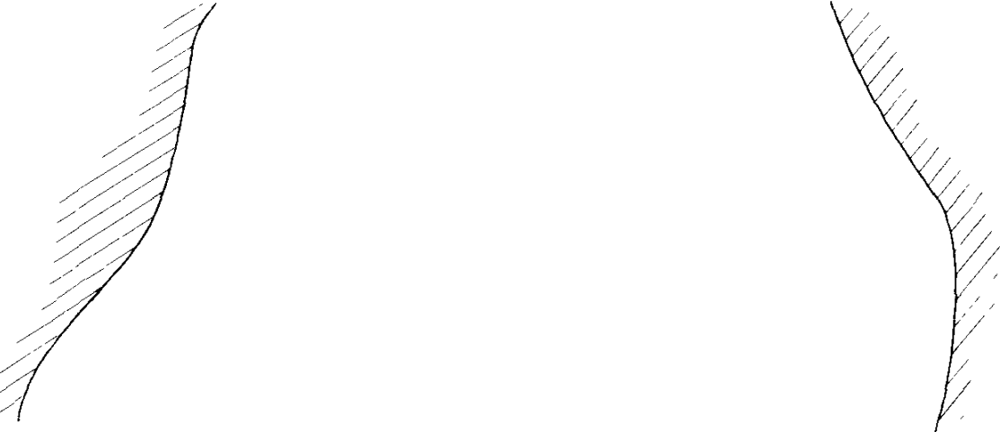

Using Viscosity Instead of Drag
A natural variation on the Stommel problem is to use a harmonic viscosity, $\boxed{\nu \nabla^2 \zeta}$, in place of the drag term $\boxed{-r\zeta}$ in the vorticity equation,
the argument being that the wind-driven circulation does not reach all the way to the ocean bottom so that an Ekman drag is not appropriate.
This variation is called the 'Munk problem' or 'Munk model', and if both drag and viscosity are present we have the 'Stommel-Munk' model
The problem is to find and understand the solution to the (dimensional) equation
$$
\beta \frac{\partial \psi}{\partial x}
= \text{curl}_z \tau_T + \nu \nabla^2 \zeta
= \text{curl}_z \tau_T + \nu \nabla^4 \psi
$$
We need two boundary conditions at each wall to solve the problem uniquely

, and as before for one of them we choose $\psi = 0$ to satisfy the no-normal-flow condition. For the other condition, two possibilities present themselves
- Zero vorticity, or $\zeta = 0$. Since $\psi = 0$ along the boundary, this possibility is equivalent to $\partial^2 \psi / \partial n^2 = 0$ where $\partial / \partial n$ denotes a derivative normal to the boundary.
This is known as the 'free-slip' condition. At $x = 0$, for example, the condition becomes $\partial v / \partial x = 0$; that is, there is no horizontal shear at the boundary
- No flow along the boundary (the no-slip condition). That is $\psi_n = 0$ where the subscript denotes the normal derivative of the streamfunction. At $x = 0$ we have $v = 0$
◀
▶